15 Digital Elevation Models
By the end of this chapter you should be able to:
- Explain how elevation mapping evolved from hill drawings to contour lines to digital elevation models.
- Tell a DEM, a DTM, and a DSM apart, and describe how lidar and radar collect elevation.
- Download a DEM at a suitable resolution from The National Map, and check it for problems before analysis.
- Calculate slope and aspect from a 3 × 3 window of elevations, and explain why the method changes the answer.
- Explain how a hillshade is calculated from the sun’s position and the terrain, and use one under a color DEM.
- Work through a line-of-sight test by hand, and explain how a viewshed repeats it for every cell.
Chapter 14 treated rasters in general: grids of cells, each with a value. The most widely used raster of all holds elevation. Engineers use it to route roads and pipelines, hydrologists to predict where floodwater will go, ecologists to explain why a cove forest grows on one side of a ridge and not the other, and phone companies to decide where a tower will be seen. This chapter covers where elevation data come from, how to get them, and four tools that turn elevation into answers: slope, hillshade, aspect, and viewshed. The maps use a real elevation model of Linville Gorge, in the Blue Ridge Mountains of North Carolina.
15.1 From hill drawings to numbers
15.1.1 Pictures of hills
Early maps showed mountains as pictures. In 1770, John Collet’s A Compleat Map of North-Carolina from an Actual Survey, engraved by I. Bayly and published in London by S. Hooper, drew the western mountains as rows of little hills (Figure 15.1). This style is pictorial relief. It tells you where the hills are, but not how high or how steep they are.
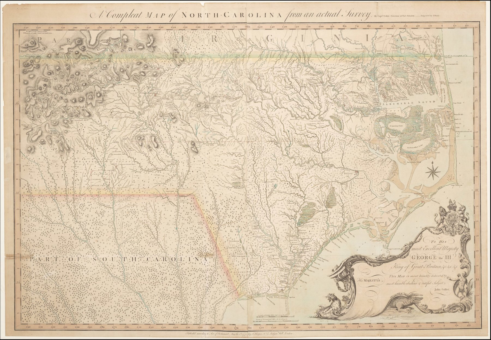
Zoom in on the Piedmont near Hillsborough (Figure 15.2). The rivers, mills, and roads are carefully placed, because they were what settlers needed. Cane Creek Mountain is a cluster of short radiating strokes, and its size hints at how prominent it is, but no height was measured. Nobody could plan a road grade from this map.
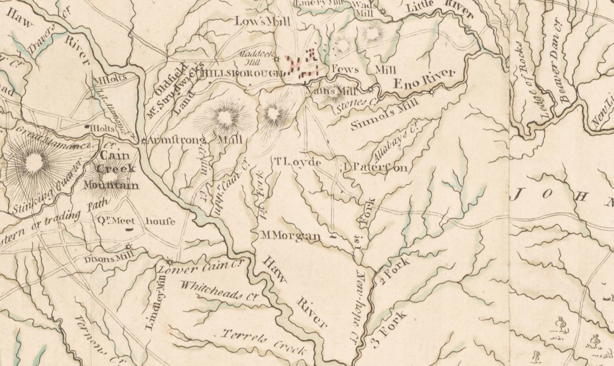
15.1.2 Contour lines
The breakthrough came from a physics experiment. In 1774, the Astronomer Royal, Nevil Maskelyne, set out to weigh the Earth by measuring how much the mass of Schiehallion, a symmetrical mountain in Scotland, pulled a plumb line sideways. To work out the mountain’s volume, his team surveyed thousands of heights around it. The mathematician Charles Hutton, who had to make sense of all those numbers, joined the points of equal height with lines (Hutton 1778). The result was the contour line, still the basis of topographic maps (Figure 15.3).
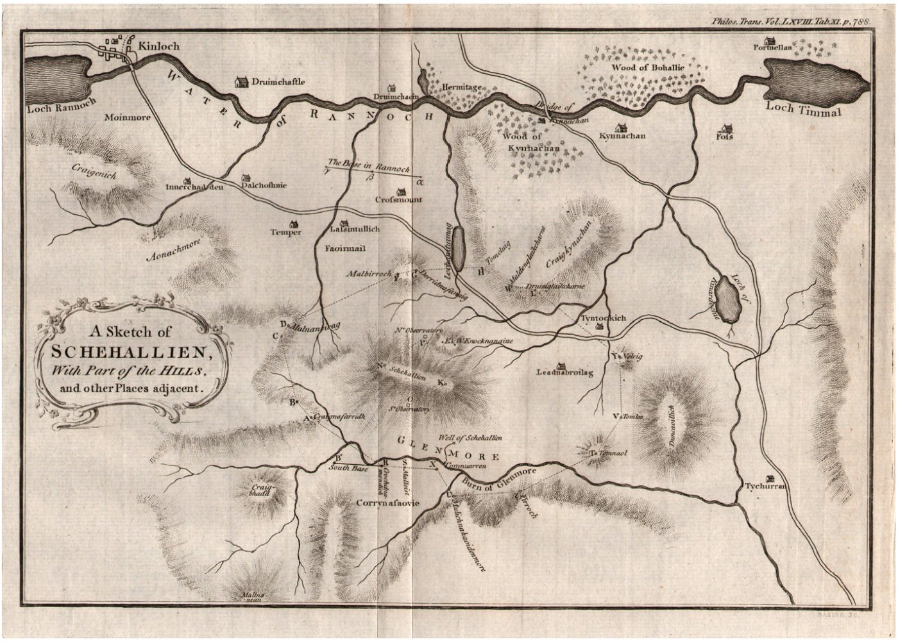
15.1.3 Topographic maps
National surveys made contours standard. The U.S. Coast Survey, founded in 1807, mapped the shoreline on detailed topographic sheets. The U.S. Geological Survey (USGS), founded in 1879, began mapping the whole country, and its 1:24,000 quadrangles, with contours every 10 or 20 feet, became the standard U.S. topographic map. A topographic map shows the shape of the land with contours, along with streams, roads, and place names (Figure 15.4).
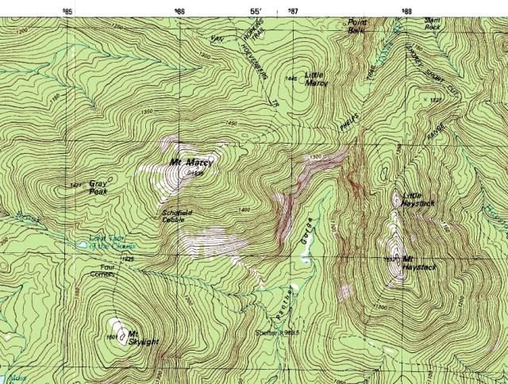
To read contours:
- Every point on a contour line has the same elevation. The contour interval is the change in elevation from one line to the next.
- Lines close together mean a steep slope; lines far apart mean a gentle one.
- Every fourth or fifth line is a thicker index contour, labeled with its elevation.
- Contours bend upstream where they cross a valley, making a V that points uphill.
Contours are a vector way to show a surface. A digital elevation model is the raster way.
15.2 What a DEM is
15.2.1 A grid of elevations
A digital elevation model (DEM) is a raster in which every cell holds one elevation (Figure 15.5). The values are usually meters above a vertical datum, such as the North American Vertical Datum of 1988 (NAVD 88) in the United States, which is close to mean sea level. As with any raster (Chapter 14), the cell size, or resolution, is a DEM’s most important property: a cell shows one height, so nothing smaller than a cell can appear.
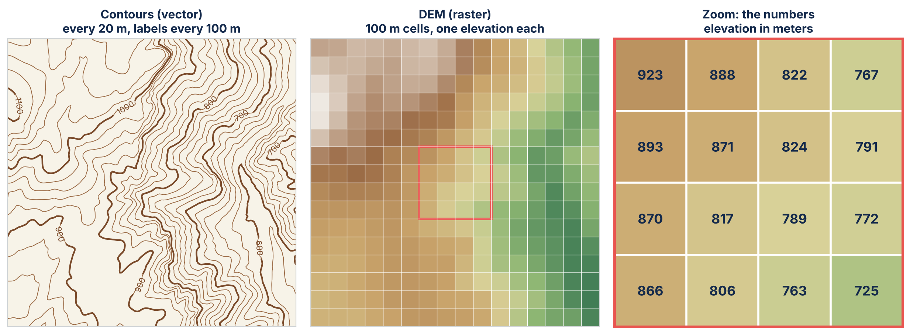
Software can display those numbers many ways: as gray shades, as a color ramp from green to brown to white, or draped in 3D (Figure 15.6). The colors and the 3D view are display choices. The data underneath are just numbers.
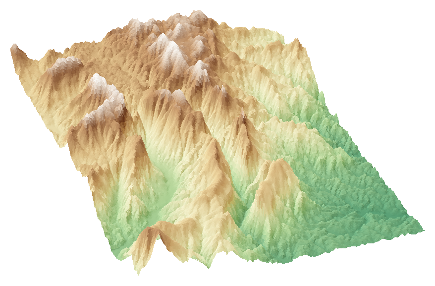
15.2.2 A short history of DEMs
DEMs began in the late 1950s, when engineers at MIT proposed storing terrain as a grid of numbers for highway design, and called it a digital terrain model (Miller and Laflamme 1958). Early grids came from field surveys, from measuring stereo pairs of air photos (photogrammetry), or from tracing the contours on paper maps.
- 1986: The French SPOT 1 satellite provided stereo images that made DEMs from space practical.
- 1996: GTOPO30 from the USGS, the first global DEM, with cells about 1 km across.
- 2000: The Shuttle Radar Topography Mission (SRTM) mapped most of Earth’s land, between 60° N and 56° S, with radar (Farr et al. 2007).
- Today: The USGS 3D Elevation Program (3DEP) keeps U.S. elevation data current, mostly with lidar.
15.3 Where elevation data come from
15.3.1 Lidar
Lidar (light detection and ranging) is now the main source of new elevation data in the United States. A scanner on an aircraft or drone fires hundreds of thousands of laser pulses a second, and times how long each takes to bounce back. Combined with the aircraft’s exact position from GPS, each return becomes a point with x, y, and z coordinates. Millions of them make a point cloud.
One pulse can come back several times (Figure 15.7). The first return comes from the first thing the pulse hits: a treetop, a roof, or a power line. Some of the light passes through gaps in the canopy and reaches the ground, and that last return comes from the bare earth. That is why lidar can map the ground under a forest, which air photos can’t. Lidar for 3DEP must have a vertical accuracy of 10 cm or better (as a root mean square error), and newer collections are better still.
15.3.2 DEM, DTM, and DSM
The three terms are often used loosely, so it helps to define them carefully (Table 15.1).
| Term | Full name | What it includes |
|---|---|---|
| DEM | Digital elevation model | The general term; in U.S. practice, usually the bare-earth surface |
| DTM | Digital terrain model | Bare earth, plus terrain features such as ridge lines and stream lines |
| DSM | Digital surface model | The first surface a sensor hits: roofs, tree canopies, and power lines |
A digital terrain model (DTM) adds breaklines, lines along ridges, streams, and road edges where the slope changes sharply, so that the surface keeps those features crisp. A digital surface model (DSM) is made from first returns (Figure 15.7).
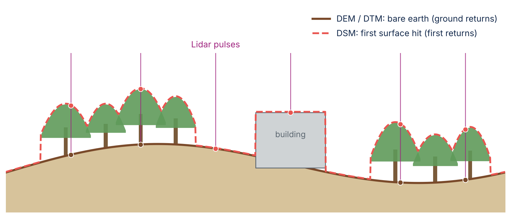
Choose the surface to match the question:
- Use a DEM or DTM for water: flow, flooding, and watersheds. Water runs over the ground, not over the treetops.
- Use a DSM for anything that light or radio waves travel through: line of sight, solar exposure, and 3D city models.
15.3.3 Why elevation matters
Governments spend billions of dollars mapping height because terrain controls so much:
- Hydrology. Floodplain maps, watersheds, and where water will flow all come from DEMs.
- Infrastructure. Highway engineers use DEMs to balance “cut and fill,” the earth removed from hills and used to fill hollows.
- Hazards. Landslides start on steep slopes, and lava and debris flows follow valleys.
- Telecommunications. Cell towers and radio links need a clear line of sight.
- Ecology and agriculture. Slope and the direction a slope faces control sunlight, soil moisture, and what grows where.
- Archaeology. Lidar DEMs reveal earthworks hidden under forests.
15.4 Getting a DEM
15.4.1 The National Map
In the United States, the place to start is The National Map Downloader from the USGS (https://apps.nationalmap.gov/downloader/). Its elevation data come from 3DEP, cover the whole country, and are free and in the public domain.
- Zoom to your study area, and draw a box around it (or use the current map extent).
- Under Data, check Elevation Products (3DEP), then the resolution you need.
- Click Search Products. The results list GeoTIFF tiles, which you can download one at a time or as a batch.
- If your area spans several tiles, combine them with Mosaic to New Raster (ArcGIS Pro) or Merge (QGIS).
15.4.2 Resolution
3DEP offers several standard resolutions (Table 15.2). Resolutions in arc-seconds are cell sizes measured in degrees of latitude and longitude: an arc-second is 1/3,600 of a degree, about 30 m on the ground.
| Product | Cell size | Coverage |
|---|---|---|
| 1 arc-second | About 30 m | The whole United States |
| 1/3 arc-second | About 10 m | The lower 48 states, Hawaii, and parts of Alaska |
| 1/9 arc-second | About 3 m | Limited areas |
| 1 meter | 1 m | Areas with lidar, a growing share of the country |
| 5 meter | 5 m | Alaska only |
Smaller cells show more detail, but the files grow fast. Cutting the cell size to a third, from 30 m to 10 m, makes 3 × 3 = 9 times as many cells (Figure 15.8). The 1/3 arc-second DEM is the usual choice for county-scale work; the 1 m DEM is best for a site, a neighborhood, or a stream reach.
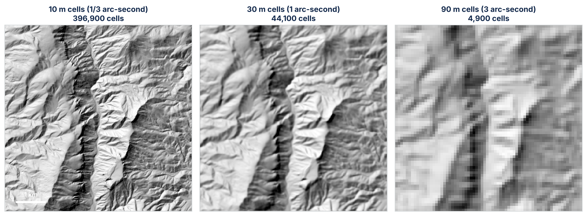
15.4.3 Global DEMs
Outside the United States, start with a global DEM (Table 15.3). All three common free ones have cells of about 30 m. Inside the United States, 3DEP is better than any of them.
| Dataset | Cell size | Coverage | Made by |
|---|---|---|---|
| SRTM (2000) | 30 m | 60° N to 56° S | NASA and NGA |
| ASTER GDEM v3 (2019) | 30 m | 83° N to 83° S | NASA and Japan’s METI |
| Copernicus GLO-30 | 30 m | All land | European Space Agency and Airbus |
| USGS 3DEP | 1–30 m | United States | USGS |
SRTM has gaps in steep mountains, where the radar couldn’t see the far side of ridges. ASTER GDEM, built from stereo satellite images, reaches farther north and south but has more artifacts, especially under clouds. Copernicus GLO-30, made from the TanDEM-X radar mission, is generally the most accurate of the three and has the fewest gaps. It is a DSM, though: in forests and cities, it shows the tops of trees and buildings.
15.4.4 Check a DEM before you use it
A DEM can have problems, and every tool you run on it inherits them. A quick hillshade (Section 15.6) is the fastest way to spot them.
- Voids are NoData holes, common in radar DEMs over steep mountains and water. Fill them from another source or by interpolation before analysis.
- Sinks are cells lower than all their neighbors. Most are errors, and they trap modeled water, which breaks flow direction and watershed tools. Hydrologists remove them with the Fill tool first (Jenson and Domingue 1988).
- Artifacts such as stripes, seams between tiles, and patterns from interpolation show up clearly in hillshades.
- Units. If x and y are in degrees but z is in meters, every slope comes out nearly vertical (Figure 15.9). Project the DEM to a coordinate system in meters, such as UTM or NC State Plane, or set a z-factor, a multiplier that converts z into the units of x and y.
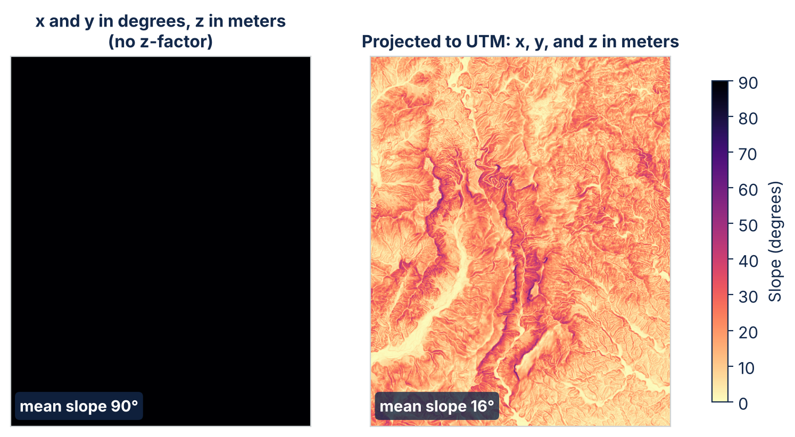
The units mistake is the most common one students make. If your slope map is almost one color, check the coordinate system first.
15.5 Slope
15.5.1 Rise over run
Slope is how steep the ground is: how much the elevation changes over a horizontal distance, or rise over run. It can be written two ways (Figure 15.10):
- Degrees use the angle, where tan(angle) = rise ÷ run. Slope in degrees runs from 0 (flat) to 90 (vertical).
- Percent is rise ÷ run × 100. A 45° slope is 100 percent, because the rise equals the run. Percent slope has no upper limit.
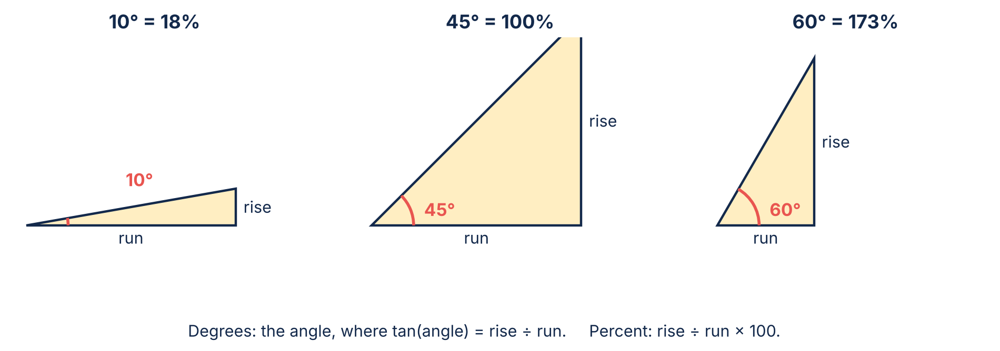
Road signs, building codes, and hiking guides usually give percent; most scientific work uses degrees. Always check which unit a slope layer is in.
15.5.2 Slope from a grid
On a real hillside, the ground can slope in both the east–west direction and the north–south direction, and the two combine into the overall slope:
\[ \text{slope} = \arctan \sqrt{\left(\frac{dz}{dx}\right)^2 + \left(\frac{dz}{dy}\right)^2} \]
where dz/dx is the rate of change in elevation from west to east, and dz/dy from south to north. A DEM has no smooth surface, only a grid of numbers, so the slope tool estimates dz/dx and dz/dy for each cell from a 3 × 3 window around it. Slope is a neighborhood function (Chapter 14): it moves the window across the raster and writes one value for every cell. Figure 15.11 works one window two ways, with 50 m cells.
![A 3 by 3 grid of elevations with letters a to i: top row 70, 65, 50; middle row 95, 80, 50; bottom row 85, 90, 80, with the center 80 outlined and north at the top. The cell distance D is 50 meters. To the right, the Fleming and Hoffer method uses four neighbors: east-west is 50 minus 95 over 100, or negative 0.45; north-south is 65 minus 90 over 100, or negative 0.25; slope is 27.2 degrees. Horn's method uses eight neighbors: east-west is 230 minus 345 over 400, or negative 0.2875; north-south is 250 minus 345 over 400, or negative 0.2375; slope is 20.5 degrees.](../images/dem/slope-window.png)
Fleming and Hoffer’s method uses only the four direct neighbors (Fleming and Hoffer 1979). The east–west change is the right neighbor minus the left, over twice the cell distance: (50 − 95) ÷ 100 = −0.45. The north–south change is (65 − 90) ÷ 100 = −0.25. The slope is arctan √(0.45² + 0.25²) = arctan 0.515 = 27.2°.
Horn’s method uses all eight neighbors, and counts the direct neighbors twice (Horn 1981). Each side of the window becomes a weighted sum: the east column is 50 + 2 × 50 + 80 = 230, and the west column is 70 + 2 × 95 + 85 = 345, so dz/dx = (230 − 345) ÷ (8 × 50) = −0.2875. The north row is 70 + 2 × 65 + 50 = 250, and the south row is 85 + 2 × 90 + 80 = 345, so dz/dy = (250 − 345) ÷ 400 = −0.2375. The slope is arctan √(0.2875² + 0.2375²) = 20.5°.
The two answers differ by almost 7°. Horn’s method averages over more cells, so it is less sensitive to noise in any one cell, and it is the method ArcGIS Pro’s Slope tool and QGIS’s Slope tool use. The lesson is broader: the method is part of the result.
15.5.3 Slope in ArcGIS Pro and QGIS
In ArcGIS Pro, the Slope tool (Spatial Analyst) outputs degrees or percent rise. In QGIS, use Raster Terrain Analysis ▸ Slope or the GDAL Slope tool. The output has the same cell size as the DEM. In Figure 15.12, the steepest cells line Linville Gorge and the smaller valleys, while ridge tops and valley floors are flat.
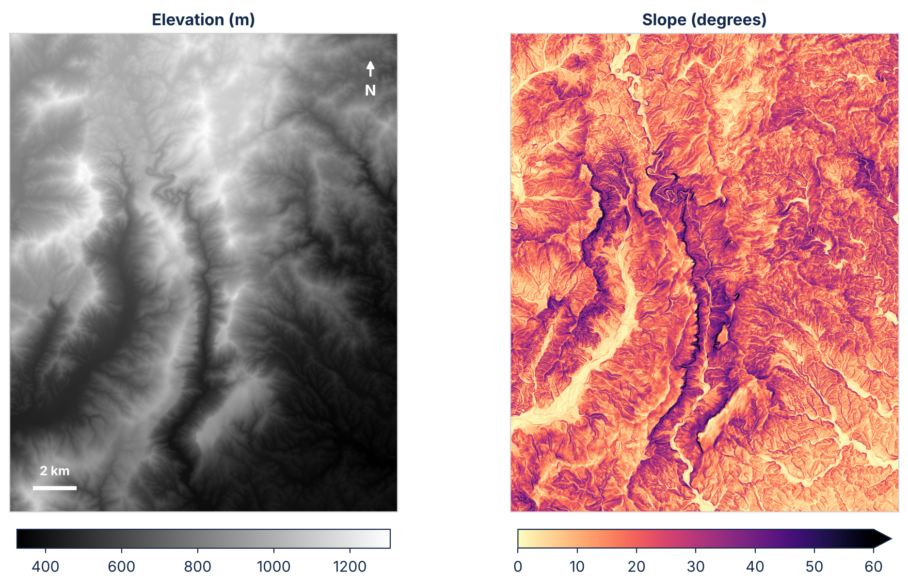
15.6 Hillshade
15.6.1 Sunlight on terrain
A hillshade, or shaded relief, shows how the terrain would look lit by the sun from a chosen direction and height. Slopes that face the sun are bright; slopes that face away are dark. Two properties of the sun matter (Figure 15.13):
- Azimuth is the compass direction the light comes from, in degrees clockwise from north.
- Altitude is the sun’s angle above the horizon.
Two properties of each cell matter too: its slope, and its aspect, the compass direction it faces (Section 15.7).
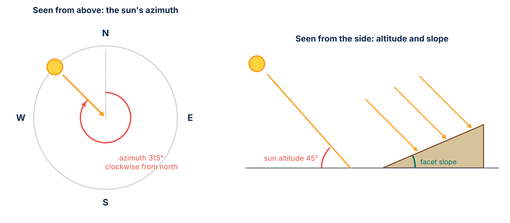
15.6.2 The relative radiance equation
The brightness of each cell, its relative radiance R, comes from those four angles:
\[ R = \cos(A_s - A_f)\,\sin(S_f)\,\cos(S_s) + \cos(S_f)\,\sin(S_s) \]
where As is the sun’s azimuth, Af is the cell’s aspect, Ss is the sun’s altitude, and Sf is the cell’s slope. When a cell faces the sun, cos(As − Af) is 1 and the cell is bright. When it faces directly away, that term is −1, and the cell is dark, or in shadow if R drops below 0.
ArcGIS Pro’s Hillshade tool scales R to the range of an 8-bit image, from 0 (full shadow) to 255 (full sunlight). Take the center cell of Figure 15.11, which has a slope of 20.5° and faces 50° (northeast; see Section 15.7), lit from 315° at 45°. Then R = cos(265°) × sin(20.5°) × cos(45°) + cos(20.5°) × sin(45°) = −0.023 + 0.663 = 0.639, and 0.639 × 255 = 163, a medium-light gray. The cell faces almost at right angles to the sun, so most of its brightness comes from the sun being high.
15.6.3 Which way should the light come from?
The default sun in ArcGIS Pro and QGIS is at azimuth 315° (the northwest) and altitude 45°. Real sunlight in North Carolina never comes from the northwest, but cartographers light maps from the upper left because that is how most people expect shadows to fall (Imhof 1982). Light a map from the south or southeast, and many readers see the terrain upside down: valleys look like ridges, and ridges like valleys (Figure 15.14). This illusion is called relief inversion.
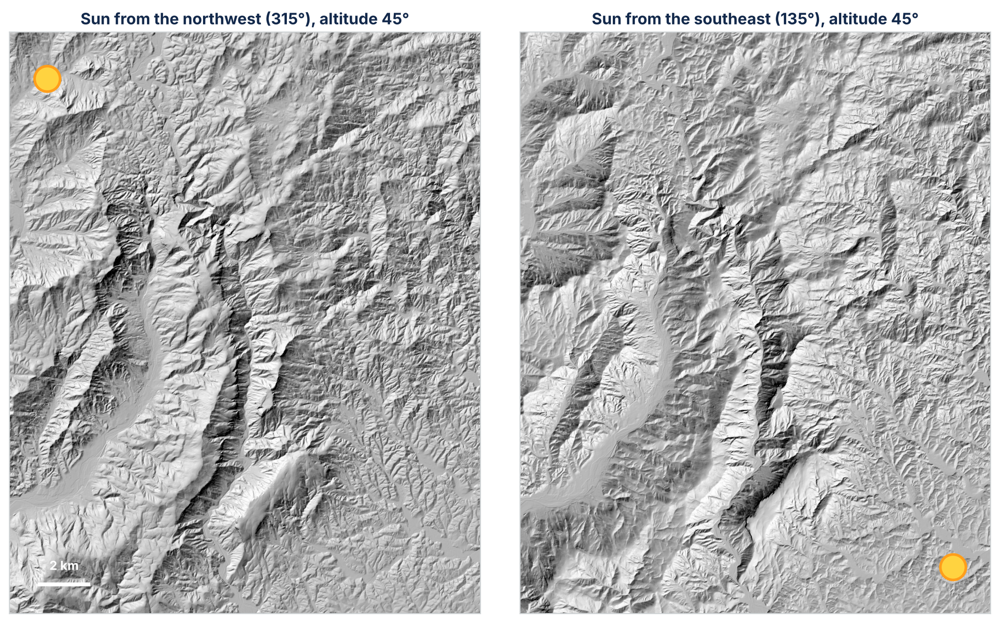
A hillshade is mostly for seeing terrain, not measuring it. Its most common use is under a semi-transparent color DEM, so that the color shows the height and the shading shows the shape of the land (Figure 15.15). Almost every topographic basemap is made this way. ArcGIS Pro’s Hillshade tool also has a Model shadows option that casts shadows from neighboring terrain, which is useful for solar analysis.
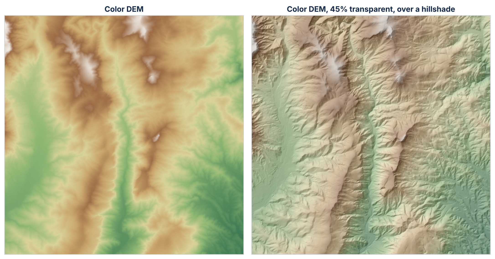
15.7 Aspect
15.7.1 The direction a slope faces
Aspect is the compass direction a slope faces: the direction water would run straight downhill. It is measured in degrees clockwise from north, so 0° (or 360°) is north, 90° is east, 180° is south, and 270° is west. It is often grouped into eight compass directions, N, NE, E, SE, S, SW, W, and NW, each 45° wide. Flat cells have no aspect, and ArcGIS Pro gives them −1.
Aspect matters wherever the sun does. In the Northern Hemisphere, south-facing slopes get the most sun: they are warmer and drier, lose snow first, and are best for solar panels and vineyards. North-facing slopes are cooler and moister. In the North Carolina mountains, they hold the rich cove forests and northern hardwoods.
15.7.2 Aspect from a grid
Aspect uses the same two numbers as slope, dz/dx and dz/dy. Slope combines their sizes; aspect uses their direction. ArcGIS Pro computes an angle from them,
\[ \theta = \operatorname{atan2}\left(\frac{dz}{dy_{\text{S}}},\ -\frac{dz}{dx}\right) \]
where dz/dyS is the change from north to south (the south row minus the north row), then converts θ, which is measured counterclockwise from east, into a compass bearing clockwise from north. For the window in Figure 15.11, dz/dx = −0.2875 and dz/dyS = +0.2375, so θ = atan2(0.2375, 0.2875) = 39.6°, and the compass aspect is 90° − 39.6° = 50.4°, northeast. That makes sense: the high cells are on the west and south sides of the window, so the ground falls toward the northeast.
15.7.3 Mapping aspect
ArcGIS Pro’s Aspect tool and QGIS’s Aspect tool output degrees. The standard symbology gives each of the eight directions its own color and flat cells gray (Figure 15.16). Because the meaning is carried only by color, always include a legend that names each direction, such as a compass rose, so that the map works for readers with color vision deficiency.
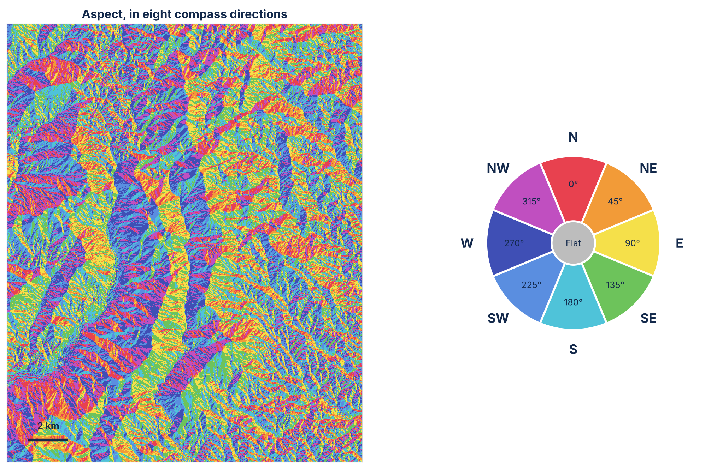
15.8 Line of sight and viewshed
15.8.1 Line of sight
A line of sight test asks whether one target is visible from one observer. The method:
- Find the direction (azimuth) from the observer to the target.
- Compute the elevation angle from the observer to the target, φt = arctan(Δz ÷ Δd), where Δz is the target’s elevation minus the observer’s, and Δd is the horizontal distance between them.
- For every cell along the line between them, compute its elevation angle, φa, the same way.
- If the target’s angle is greater than every φa, the target is visible. If any cell in between has a greater angle, it blocks the view.
In Figure 15.17, the observer stands at 50 m, and the target is 100 m away at 20 m. Its angle is arctan(−30 ÷ 100) = −16.7°. Point P1, 60 m away at 28 m, has an angle of arctan(−22 ÷ 60) = −20.1°, lower than the target’s, so it doesn’t block. Point P2, 30 m away at 43 m, has an angle of arctan(−7 ÷ 30) = −13.1°. That is higher than the target’s −16.7°, so P2 blocks the view, and the target is not visible.
![A side view of ground sloping down from left to right, with elevation in meters from 0 to 70 and distance from the observer from 0 to 100 meters. The observer is at 0 meters distance and 50 meters elevation. P2 is at 30 meters, elevation 43, angle negative 13.1 degrees. P1 is at 60 meters, elevation 28, angle negative 20.1 degrees. The target is at 100 meters, elevation 20, angle negative 16.7 degrees. A dashed red line from the observer to the target passes just under the ground at P2. Text reads: P2's angle, negative 13.1 degrees, is higher than the target's, negative 16.7 degrees, so P2 blocks the view.](../images/dem/line-of-sight.png)
15.8.2 Viewshed
A viewshed is the whole area visible from one or more observer points: the line-of-sight test run from the observer to every cell in the DEM. Each cell is marked visible or not visible. With several observers, the output can count how many observers see each cell.
The tools take a DEM and the observer points, plus options such as:
- Observer height above the ground: 1.7 m for a person’s eyes, or 30 m for a tower. In ArcGIS Pro, it is the OFFSETA field of the observer points.
- Target height, for asking whether something tall, such as a wind turbine, can be seen.
- Earth’s curvature and refraction. Over long distances, the Earth curves away by about 7 m at 10 km, and the atmosphere bends light back a little. ArcGIS Pro’s Viewshed tool can correct for both, and the Geodesic Viewshed tool does so by default.
Figure 15.18 shows what a hiker standing on Table Rock, a peak on the east rim of Linville Gorge, could see.
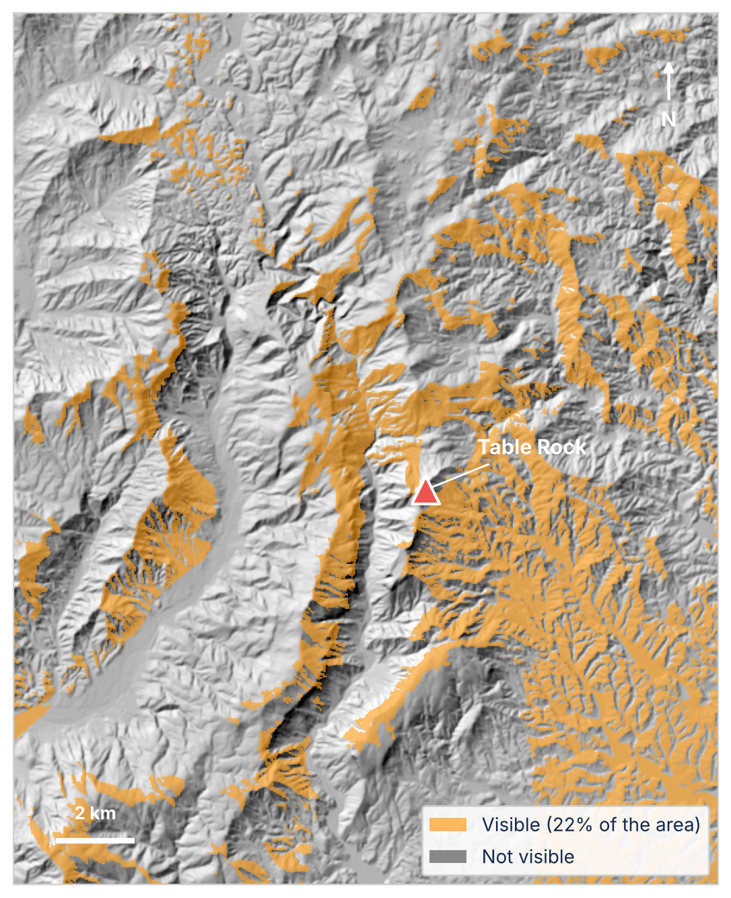
Two things to keep in mind. First, a bare-earth DEM ignores trees and buildings, so a viewshed on a DEM shows what you could see in winter with no leaves, or after clear-cutting. When obstructions matter, use a DSM. Second, the result is only as good as the DEM: an error of a few meters on a ridge can hide or reveal a whole valley.
15.8.3 Line of sight and viewshed in practice
The two tools answer different questions:
- Line of sight answers a yes-or-no question between two points. Can a radar station see an aircraft? Will a microwave link between two towers be blocked? Is a proposed building visible from a historic site?
- Viewshed answers a where question. Which areas can a cell tower, a fire lookout, or a wind farm be seen from? Which candidate tower site covers the most area? For siting problems, analysts run viewsheds from several candidate locations and compare how much area each one covers, often as a layer in a suitability model (Chapter 18).
15.9 Surface tools in ArcGIS Pro and QGIS
| Task | ArcGIS Pro | QGIS |
|---|---|---|
| Download a DEM | The National Map Downloader (web) | The National Map Downloader (web) |
| Combine tiles | Mosaic to New Raster | Merge (GDAL) or Build Virtual Raster |
| Project the DEM | Project Raster | Warp (Reproject) (GDAL) |
| Fill sinks | Fill (Spatial Analyst) | Fill Sinks (Wang & Liu) (SAGA), or r.fill.dir (GRASS) |
| Slope | Slope (Spatial Analyst) | Slope (Raster Terrain Analysis or GDAL) |
| Aspect | Aspect (Spatial Analyst) | Aspect (Raster Terrain Analysis or GDAL) |
| Hillshade | Hillshade (Spatial Analyst) | Hillshade (Raster Terrain Analysis or GDAL) |
| Viewshed | Viewshed or Geodesic Viewshed (Spatial Analyst) | Viewshed (GDAL), or the Visibility Analysis plugin |
| Line of sight | Line Of Sight (3D Analyst) | The Visibility Analysis plugin |
| Contours | Contour (Spatial Analyst) | Contour (GDAL) |
ArcGIS Pro’s surface tools need the Spatial Analyst or 3D Analyst extension. Its Surface Parameters tool can also calculate slope and aspect by fitting a smooth surface to a larger window than 3 × 3, which helps with noisy, high-resolution lidar DEMs. In QGIS, all the tools above are free; the GDAL versions also run from the command line with gdaldem and gdal_viewshed.
15.10 Check your understanding
Who first joined points of equal height with contour lines, to summarize the Schiehallion survey?
On a topographic map, contour lines that are very close together mean:
Which surface would you use to check whether a building blocks a cell tower’s signal?
You switch from a 30 m DEM to a 10 m DEM of the same area. About how many times as many cells does it have?
A slope of 45° is how many percent?
Your slope map from a DEM in latitude and longitude shows almost every cell near 90°. What is the most likely problem?
What is the default sun azimuth for a hillshade in ArcGIS Pro, in degrees?
A cell has an aspect of 180°. Which way does it face?
In a line-of-sight test, a point between the observer and the target has an elevation angle of −10°, and the target’s angle is −15°. The target is:
15.11 Summary
- Elevation mapping moved from pictorial relief, to contour lines (Hutton, 1774), to national topographic maps, to digital elevation models.
- A DEM is a raster of elevations. Cell size sets what it can show; cutting the cell size to a third makes nine times as many cells.
- Lidar times laser pulses: first returns build a DSM of treetops and roofs, and ground returns build a bare-earth DEM. A DTM adds breaklines. Use bare earth for water, and a DSM for sight lines.
- U.S. DEMs come from 3DEP through The National Map Downloader. Elsewhere, start with Copernicus GLO-30. Check every DEM for voids, sinks, artifacts, and mismatched units before analysis.
- Slope is rise over run, in degrees or percent, estimated from a 3 × 3 window. Horn’s method (eight neighbors) is used by ArcGIS Pro and QGIS; Fleming and Hoffer’s (four neighbors) gives a different answer.
- A hillshade computes brightness from the sun’s azimuth and altitude and each cell’s slope and aspect. Light from the northwest (315°) avoids relief inversion. A color DEM over a hillshade is shaded relief.
- Aspect is the direction a slope faces, 0–360° clockwise from north, from the same two partial slopes. Label every direction in the legend.
- Line of sight compares elevation angles along a line; a viewshed repeats it for every cell, from one or more observers.
15.12 Exercises
- Contours by hand. Print a USGS topographic map of the area around your hometown from topoView. Find the steepest and the flattest places on it, and explain how you could tell from the contours alone.
- Download a DEM. Download the 1/3 arc-second DEM for Orange County, NC, from The National Map Downloader. What is its coordinate system? Project it to NC State Plane (meters) before going on.
- Slope by hand. For the window 100, 110, 120 / 100, 105, 115 / 95, 100, 110, with 10 m cells, compute the slope by Fleming and Hoffer’s method and by Horn’s method. Which is steeper?
- Aspect by hand. For the same window, which way does the center cell face? Explain your answer from the numbers before you calculate it.
- Surface tools. With your Orange County DEM, run Slope, Aspect, and Hillshade. Then make a shaded-relief map: put the DEM over the hillshade with a color ramp and 50 percent transparency. Where are the steepest slopes, and why there?
- Relief inversion. Make two hillshades of the same area, one lit from 315° and one from 135°. Show them to a friend without saying which is which. Which one looks right to them?
- Viewshed. Put an observer on the top of a hill or building on or near campus, with a height of 1.7 m, and run a viewshed. Then run it again with the observer 30 m higher, as if on a tower. How much more area is visible?
- Global DEMs. For a mountain range outside the United States, download SRTM and Copernicus GLO-30 from OpenTopography, and subtract one from the other with map algebra (Chapter 14). Where do they differ most, and why?
15.13 Further reading and online resources
15.13.1 Books and papers
- GIS Fundamentals, by Paul Bolstad (Bolstad 2022). The chapters on raster analyses and terrain analysis cover DEMs, slope, aspect, and viewsheds.
- Principles of Geographical Information Systems, by Peter Burrough, Rachael McDonnell, and Christopher Lloyd (Burrough et al. 2015), has a full chapter on digital elevation models and surface derivatives.
- Terrain Analysis: Principles and Applications, edited by John Wilson and John Gallant (Wilson and Gallant 2000).
- Cartographic Relief Presentation, by Eduard Imhof (Imhof 1982), the classic book on showing terrain on maps, including hillshading and the northwest light.
- Berthold Horn, “Hill shading and the reflectance map” (Horn 1981), the source of Horn’s method.
- Charles Miller and Robert Laflamme, “The digital terrain model: Theory and application” (Miller and Laflamme 1958), the first description of a DEM.
- Tom Farr and colleagues, “The Shuttle Radar Topography Mission” (Farr et al. 2007).
- Marcello Canuto and colleagues, “Ancient lowland Maya complexity as revealed by airborne laser scanning of northern Guatemala” (Canuto et al. 2018).
- Susan Jenson and Julia Domingue, “Extracting topographic structure from digital elevation data for geographic information system analysis” (Jenson and Domingue 1988), the method behind filling sinks.
15.13.2 ArcGIS Pro
- Esri, “An overview of the Surface toolset”: https://pro.arcgis.com/en/pro-app/latest/tool-reference/spatial-analyst/an-overview-of-the-surface-tools.htm.
- Esri, “Slope” tool reference: https://pro.arcgis.com/en/pro-app/latest/tool-reference/spatial-analyst/slope.htm.
- Esri, “How Slope works”: https://pro.arcgis.com/en/pro-app/latest/tool-reference/spatial-analyst/how-slope-works.htm.
- Esri, “How Aspect works”: https://pro.arcgis.com/en/pro-app/latest/tool-reference/spatial-analyst/how-aspect-works.htm.
- Esri, “How Hillshade works”: https://pro.arcgis.com/en/pro-app/latest/tool-reference/spatial-analyst/how-hillshade-works.htm.
- Esri, “Viewshed” tool reference: https://pro.arcgis.com/en/pro-app/latest/tool-reference/spatial-analyst/viewshed.htm.
- Esri, “Line Of Sight” (3D Analyst): https://pro.arcgis.com/en/pro-app/latest/tool-reference/3d-analyst/line-of-sight.htm.
- Esri, “Fill” tool reference: https://pro.arcgis.com/en/pro-app/latest/tool-reference/spatial-analyst/fill.htm.
- Esri, “Surface Parameters” tool reference: https://pro.arcgis.com/en/pro-app/latest/tool-reference/spatial-analyst/surface-parameters.htm.
15.13.3 QGIS and GDAL
- QGIS User Guide, “Raster terrain analysis” (Slope, Aspect, Hillshade, Ruggedness): https://docs.qgis.org/latest/en/docs/user_manual/processing_algs/qgis/rasterterrainanalysis.html.
- QGIS User Guide, GDAL “Raster analysis” (Slope, Aspect, Hillshade, Viewshed, Contour): https://docs.qgis.org/latest/en/docs/user_manual/processing_algs/gdal/rasteranalysis.html.
- QGIS Training Manual, “Terrain Analysis”: https://docs.qgis.org/latest/en/docs/training_manual/rasters/terrain_analysis.html.
- GDAL,
gdaldem(slope, aspect, hillshade, and color relief): https://gdal.org/en/stable/programs/gdaldem.html. - GDAL,
gdal_viewshed: https://gdal.org/en/stable/programs/gdal_viewshed.html.
15.13.4 Elevation data
- USGS, The National Map Downloader: https://apps.nationalmap.gov/downloader/.
- USGS, 3D Elevation Program (3DEP): https://www.usgs.gov/3d-elevation-program.
- USGS, “About 3DEP Products & Services”: https://www.usgs.gov/3d-elevation-program/about-3dep-products-services.
- USGS EarthExplorer, for SRTM, ASTER GDEM, and GTOPO30: https://earthexplorer.usgs.gov.
- USGS EROS, “Global 30 Arc-Second Elevation (GTOPO30)”: https://www.usgs.gov/centers/eros/science/usgs-eros-archive-digital-elevation-global-30-arc-second-elevation-gtopo30.
- USGS EROS, “Shuttle Radar Topography Mission (SRTM) 1 Arc-Second Global”: https://www.usgs.gov/centers/eros/science/usgs-eros-archive-digital-elevation-shuttle-radar-topography-mission-srtm-1.
- NASA JPL, “Shuttle Radar Topography Mission”: https://www2.jpl.nasa.gov/srtm/.
- NASA JPL, ASTER Global Digital Elevation Model: https://asterweb.jpl.nasa.gov/gdem.asp.
- Copernicus Data Space Ecosystem, “Copernicus DEM”: https://dataspace.copernicus.eu/explore-data/data-collections/copernicus-contributing-missions/collections-description/COP-DEM.
- OpenTopography, for global DEMs and lidar point clouds: https://opentopography.org.
- NOAA Digital Coast, for coastal lidar and elevation: https://coast.noaa.gov/digitalcoast/.
- NC OneMap, North Carolina’s geospatial data portal: https://www.nconemap.gov.
- North Carolina Spatial Data Download, for the state’s lidar and DEMs: https://sdd.nc.gov.
- North Carolina Floodplain Mapping Program: https://flood.nc.gov/ncflood/.
15.13.5 Topographic maps
- USGS topoView, for current and historical topographic maps: https://ngmdb.usgs.gov/topoview/.
- USGS, “Historical Topographic Maps: Preserving the Past”: https://www.usgs.gov/programs/national-geospatial-program/historical-topographic-maps-preserving-past.
- Wikipedia, “Schiehallion experiment”: https://en.wikipedia.org/wiki/Schiehallion_experiment.
15.13.6 Lidar and shaded relief
- Tom Patterson, Shaded Relief, on making terrain maps: https://shadedrelief.com.
- The GIS&T Body of Knowledge, including entries on DEMs and terrain analysis: https://www.ucgis.org/site/gis-t-body-of-knowledge.